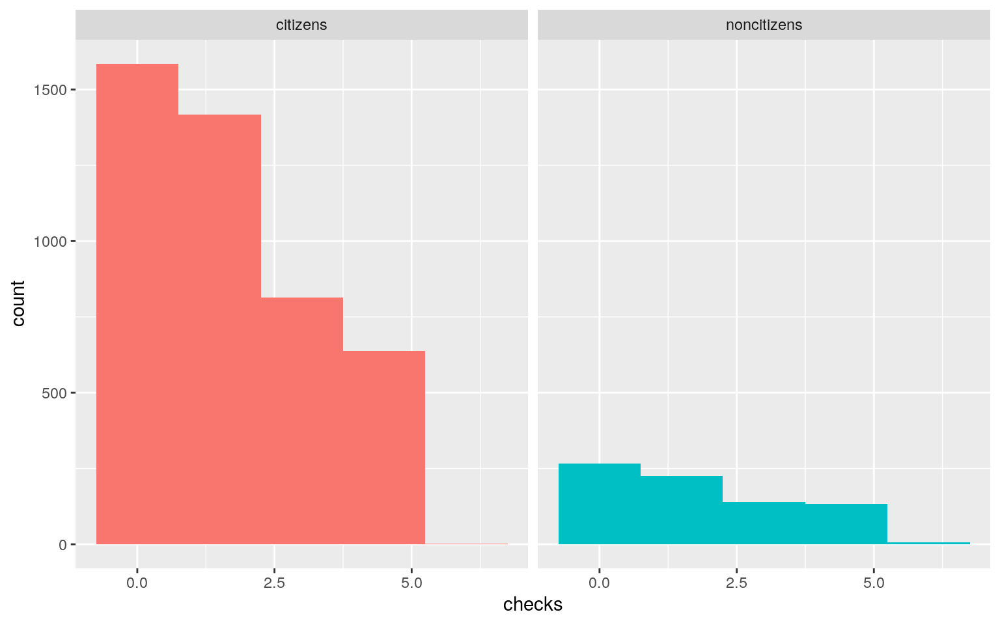
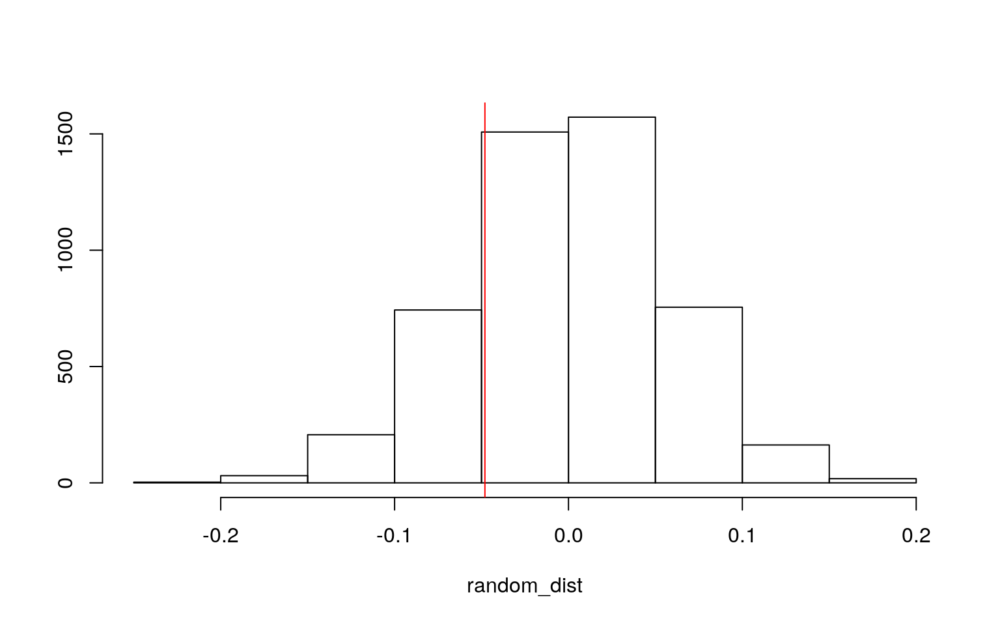
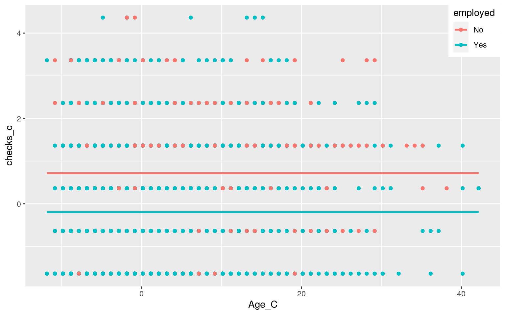
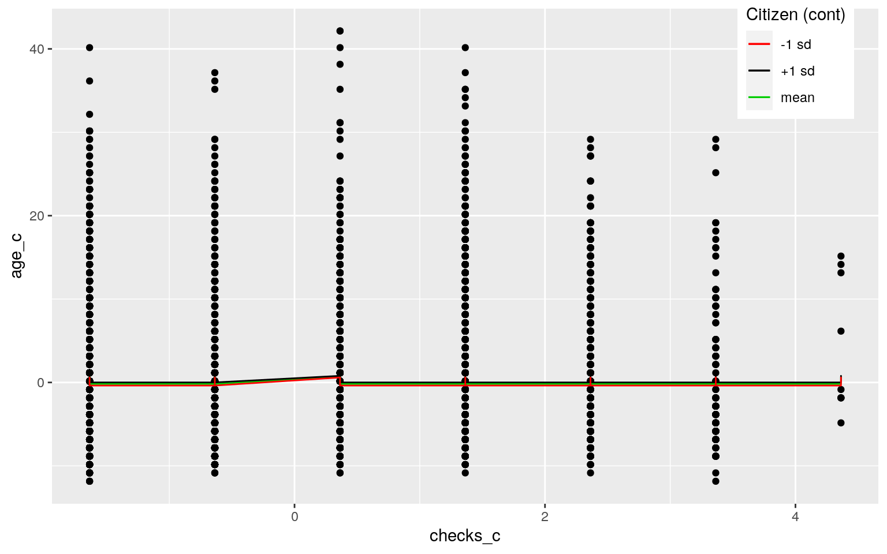
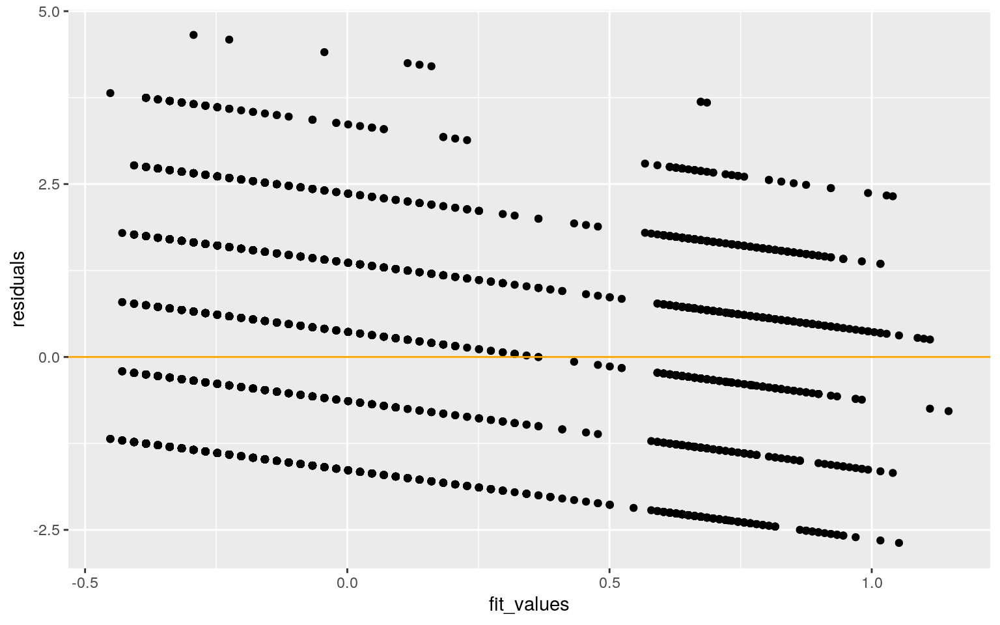
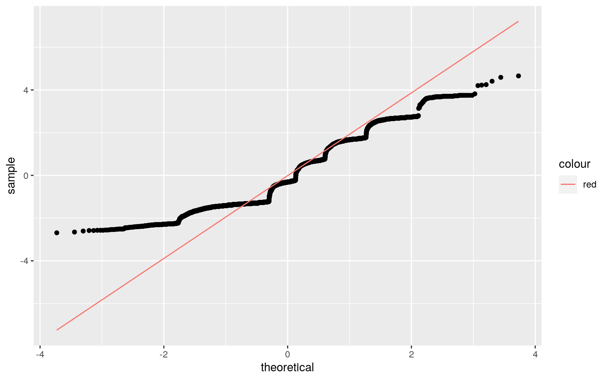
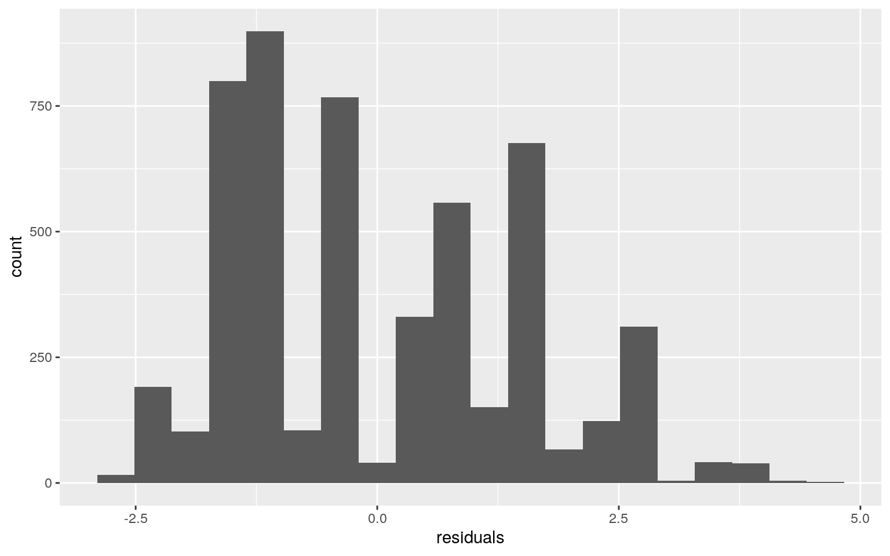
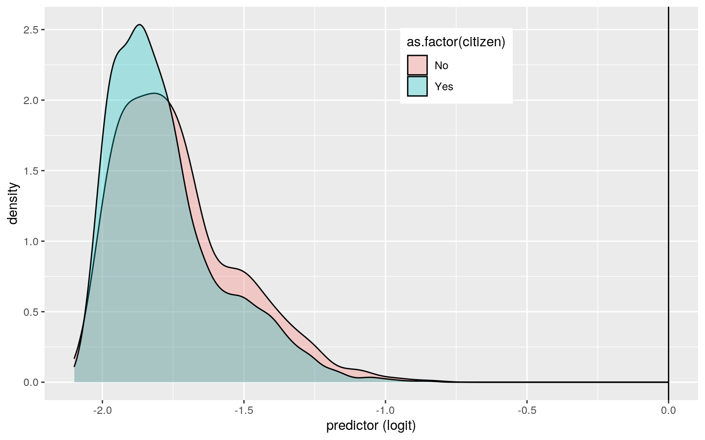
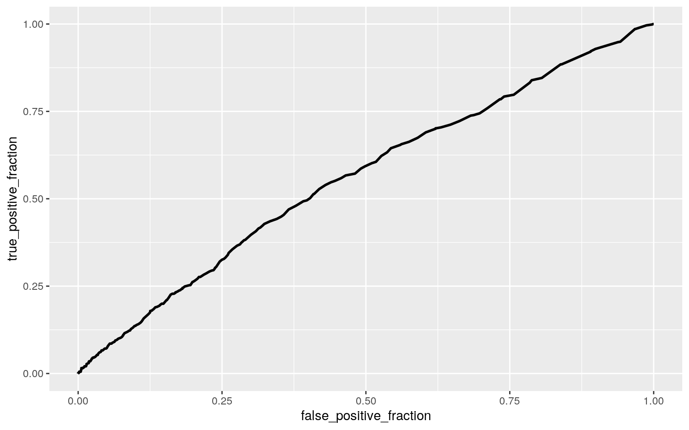

My dataset is exploring arrests regarding marijuana possession. The dataset explores race, employment, sex, citizenship, age, previous arrests, whether they were released, and the year of the arrest. The dataset may be at least somewhat out of date, as it lists race as “colour.” The dataset has 5226 observations. I am most interested in seeing whether there is a correlation with race or citizenship, and whether the individual was released.
##MANOVA
Arrests <- read.csv("Arrests.csv")
manova_test<-manova(cbind(age, checks)~citizen, data=Arrests)
summary(manova_test)## Df Pillai approx F num Df den Df Pr(>F)
## citizen 1 0.005886 15.462 2 5223 2.017e-07 ***
## Residuals 5224
## ---
## Signif. codes: 0 '***' 0.001 '**' 0.01 '*' 0.05 '.' 0.1
' ' 1summary.aov(manova_test)## Response age :
## Df Sum Sq Mean Sq F value Pr(>F)
## citizen 1 1910 1909.64 27.754 1.433e-07 ***
## Residuals 5224 359441 68.81
## ---
## Signif. codes: 0 '***' 0.001 '**' 0.01 '*' 0.05 '.' 0.1
' ' 1
##
## Response checks :
## Df Sum Sq Mean Sq F value Pr(>F)
## citizen 1 14.4 14.4073 6.0869 0.01365 *
## Residuals 5224 12364.8 2.3669
## ---
## Signif. codes: 0 '***' 0.001 '**' 0.01 '*' 0.05 '.' 0.1
' ' 1Arrests%>%group_by(citizen)%>%summarize(mean(checks),mean(age))## # A tibble: 2 x 3
## citizen `mean(checks)` `mean(age)`
## <fct> <dbl> <dbl>
## 1 No 1.76 25.3
## 2 Yes 1.61 23.6pairwise.t.test(Arrests$age,Arrests$citizen,p.adj="none")##
## Pairwise comparisons using t tests with pooled SD
##
## data: Arrests$age and Arrests$citizen
##
## No
## Yes 1.4e-07
##
## P value adjustment method: nonepairwise.t.test(Arrests$checks,Arrests$citizen,p.adj="none")##
## Pairwise comparisons using t tests with pooled SD
##
## data: Arrests$checks and Arrests$citizen
##
## No
## Yes 0.014
##
## P value adjustment method: none1-.95^2## [1] 0.0975.05/2## [1] 0.025I found that individually, a persons age and the number of previous arrests makes a significant difference on whether or not they are a citizen. Additionally, the two variables when taken into consideration together also make a significant difference on whether or not the person is a citizen. The t tests confirm that citizen status has a significant effect on the persons age and number of previous checks. I ran a two t tests, so there is a 9.75% chance of some sort of type 1 error, and the bonferroni correction is .025. The data comes from a small sample area (Toronto), so the data is good for random sampling and concluding data from this area, but may not be applicable elsewhere.
noncitizens <- Arrests %>% filter(citizen %in% c("No")) %>% select(checks)
noncitizens <- as.vector(t(noncitizens))
citizens <- Arrests %>% filter(citizen %in% c("Yes")) %>% select(checks)
citizens <- as.vector(t(citizens))
citizenry_checks <-data.frame(citizen=c(rep("citizens",4455),rep("noncitizens",771)),checks=c(citizens,noncitizens))
head(citizenry_checks)## citizen checks
## 1 citizens 3
## 2 citizens 3
## 3 citizens 3
## 4 citizens 1
## 5 citizens 1
## 6 citizens 0ggplot(citizenry_checks, aes(checks,fill=citizen))+geom_histogram(bins=5)+ facet_wrap(~citizen,ncol=2)+theme(legend.position="none")
citizenry_checks %>% group_by(citizen)%>%
summarize(means=mean(checks))%>%summarize(`mean_diff:`=diff(means))## # A tibble: 1 x 1
## `mean_diff:`
## <dbl>
## 1 0.148head(perm1<-data.frame(checks=citizenry_checks$checks,citizen=sample(citizenry_checks$citizen)))## checks citizen
## 1 3 citizens
## 2 3 citizens
## 3 3 noncitizens
## 4 1 citizens
## 5 1 citizens
## 6 0 citizensperm1%>%group_by(citizen)%>%
summarize(means=mean(checks))%>%summarize(`mean_diff:`=diff(means))## # A tibble: 1 x 1
## `mean_diff:`
## <dbl>
## 1 0.0248Arrests %>% group_by(citizen)%>%
summarize(means=mean(checks))%>%summarize(`mean_diff:`=diff(means))## # A tibble: 1 x 1
## `mean_diff:`
## <dbl>
## 1 -0.148random_dist<-vector()
for(i in 1:5000){
new<-data.frame(citizen=sample(citizenry_checks$citizen),checks=citizenry_checks$checks)
random_dist[i]<-mean(new[new$citizen=="citizens",]$checks)-
mean(new[new$citizen=="noncitizens",]$checks)}
{hist(random_dist,main="",ylab=""); abline(v = -0.0480556,col="red")}
mean(random_dist>.0480556 | random_dist < -.0480556)## [1] 0.4064I first had to turn my two categories of citizenship into vectors using the values from the check numerical category. I then performed a randomization test between the citizenry groups, which I categorized into citizens and noncitizens, and checks (which ranged from 0 to 6). The null hypothesis is: mean state birth rate is the same for younger and older teens and the alternative hypothesis states that the checks are different for citizens and noncitizens. The mean difference was found to be -.1480556. I then randomized the data and created a histogram showing the results with a red line to be at the mean difference point. The red line appears on the graph because there are mean differences which are as extreme as the computed mean difference value. A t-test was run and confirmed this by showing p-value of 0.456, meaning we cannot reject the null hypothesis to say that there is a difference in checks between the two type of citizenship.
Arrests$age_c <- Arrests$age - mean(Arrests$age)
Arrests$checks_c <- Arrests$checks - mean(Arrests$checks)
fit<-lm(checks_c~age_c*employed, data= Arrests)
summary(fit)##
## Call:
## lm(formula = checks_c ~ age_c * employed, data =
Arrests)
##
## Residuals:
## Min 1Q Median 3Q Max
## -2.6884 -1.3206 -0.3104 1.2939 4.6567
##
## Coefficients:
## Estimate Std. Error t value Pr(>|t|)
## (Intercept) 0.695823 0.045418 15.321 <2e-16 ***
## age_c 0.011812 0.005035 2.346 0.0190 *
## employedYes -0.879057 0.050995 -17.238 <2e-16 ***
## age_c:employedYes 0.010864 0.005790 1.876 0.0606 .
## ---
## Signif. codes: 0 '***' 0.001 '**' 0.01 '*' 0.05 '.' 0.1
' ' 1
##
## Residual standard error: 1.484 on 5222 degrees of
freedom
## Multiple R-squared: 0.07118, Adjusted R-squared: 0.07064
## F-statistic: 133.4 on 3 and 5222 DF, p-value: < 2.2e-16t.test(data=Arrests,age_c~employed,var.eq=T)##
## Two Sample t-test
##
## data: age_c by employed
## t = 8.4908, df = 5224, p-value < 2.2e-16
## alternative hypothesis: true difference in means is not
equal to 0
## 95 percent confidence interval:
## 1.821362 2.914913
## sample estimates:
## mean in group No mean in group Yes
## 1.8628805 -0.5052571ggplot(Arrests, aes(x=age_c, y=checks_c, group=employed)) + geom_point(aes(color = employed)) + geom_smooth(method = "lm", formula = y~1,se=F,fullrange = T,aes(color = employed)) + theme(legend.position = c(.945,.91)) + xlab("Age_C") For the linear regression, I tried to predict the number of checks based on the age and employment status of the individuals, as well as the interaction between the variables. The linear regression showed that the effect of age and employment individually have a significant effect on the check number (p values of .0190 and 2x10^-16 respectively), but when considered together their significance is no longer there. The results conclude that for every one year of age increased, the number of checks increases by .011812. Additionally, the test showed people who are employed have .879057 less checks than those who aren’t. The slope for the effect of age on checks is 0.010864 higher for employed than nonemployed.
newset<-Arrests
newset$age_c<-mean(Arrests$age_c)
newset$mean<-predict(fit,newset)
newset$age_c<-mean(Arrests$age_c)+sd(Arrests$age_c)
newset$plus.sd<-predict(fit,newset)
newset$age_c<-mean(Arrests$age_c)-sd(Arrests$age_c)
newset$minus.sd<-predict(fit,newset)
my_colors<-c("#619CFF","#F8766D","#00BA38")
names(my_colors)<-c("-1 sd","mean","+1 sd")
my_colors=as.factor(my_colors)
ggplot(Arrests,aes(checks_c,age_c),group=my_colors)+geom_point()+geom_line(data=newset,aes(y=mean,color="mean"))+geom_line(data=newset,aes(y=plus.sd,color="+1 sd"))+geom_line(data=newset,aes(y=minus.sd,color="-1 sd"))+scale_color_manual(values=my_colors)+labs(color="Citizen (cont)")+theme(legend.position=c(.9,.9)) #Interaction Plot When I plotted the interaction, I got this very crude plot as the result. It ended up this way due to the fact that the response variables were all in whole integers. There does not seem to be a lot of interaction going on in general between age and checks. If anything, there tends to be less older people with a high number of checks. There definitely does not appear to be a clear trend though.
residuals <- lm(checks_c ~ age_c*citizen, data = Arrests)$residuals
fitted <- lm(checks_c ~ age_c*citizen, data = Arrests)$fitted.values
residuals <- fit$residuals
fit_values <- fit$fitted.values
#Checks for homoskedasticity and linearity
ggplot() + geom_point(aes(fit_values, residuals)) + geom_hline(yintercept = 0, color = 'orange') Upon testing for homoskedacity I found the plot to be heteroskedastic and nonlinear.
ggplot() + geom_qq(aes(sample=residuals)) + geom_qq_line(aes(sample = residuals, color = "red"))
ggplot()+geom_histogram(aes(residuals), bins=20) #Plot to check for normality
ks.test(residuals, "pnorm", mean=0, sd(residuals)) ##
## One-sample Kolmogorov-Smirnov test
##
## data: residuals
## D = 0.1759, p-value < 2.2e-16
## alternative hypothesis: two-sidedThe graphs and ks.test show that the data is not normally distributed. The histogram isn’t clearly skewed one way or the other but doesn’t proportionally pan out into a bell curve. The points on the qq plot additionally do not align with the red line, meaning it is not normal. The ks test resulted in a p value much smaller than .05, meaning it is significantly not normal. As a result we reject the null that says my data is normal.
robust <- lm(checks_c ~ age_c*citizen, data = Arrests)
bptest(robust)##
## studentized Breusch-Pagan test
##
## data: robust
## BP = 18.04, df = 3, p-value = 0.0004315summary(robust)$coef[,1:2]## Estimate Std. Error
## (Intercept) 0.099410179 0.055628493
## age_c 0.018445386 0.006097038
## citizenYes -0.114718392 0.060141436
## age_c:citizenYes 0.007539949 0.006708677coeftest(robust, vcov = vcovHC(robust))[,1:2]## Estimate Std. Error
## (Intercept) 0.099410179 0.059550344
## age_c 0.018445386 0.006096651
## citizenYes -0.114718392 0.063702274
## age_c:citizenYes 0.007539949 0.006691445(sum((Arrests$checks_c - mean(Arrests$checks_c))^2) - sum(fit$residuals^2)) / sum((Arrests$checks_c - mean(Arrests$checks_c))^2)## [1] 0.07117571The results of the BP test gave a p value of less than 0.05, so null hypothesis can be rejected. This means that my data is heteroskedastic. When using the robust standard error, the standard error of the intercept and citizenship increased while the standard error for age and the interaction between age and citizenship decreased. My model explain 7.12% of variation.
- Interpret the coefficient estimates (do not discuss significance) (10)
- Plot the regression using `ggplot()` using geom_smooth(method="lm"). If your interaction is numeric by numeric, refer to code in the slides to make the plot or check out the `interactions` package, which makes this easier. If you have 3 or more predictors, just chose two of them to plot for convenience. (10)
- What proportion of the variation in the outcome does your model explain? (4)
- Check assumptions of linearity, normality, and homoskedasticity either graphically or using a hypothesis test (5)
- Regardless, recompute regression results with robust standard errors via `coeftest(..., vcov=vcovHC(...))`. Discuss significance of results, including any changes from before/after robust SEs if applicable. (10)set.seed(123)
bootstrapdata <- sample_frac(Arrests, replace=T)
sampledist <- replicate(5000, {
bootstrapdata <- sample_frac(Arrests, replace=T)
bootstrapfitted <- lm(checks_c ~ age_c*citizen, data = bootstrapdata)
coef(bootstrapfitted)
})
sampledist %>% t %>% as.data.frame %>% summarize_all(sd)## (Intercept) age_c citizenYes age_c:citizenYes
## 1 0.0590742 0.006080104 0.06334151 0.006671113The bootstrapped standard errors were .0590742 for the intercept, .006080104 for age, .06334151 for citizens, and .006671113 for the interaction between age and the being a citizen. All of these standard errors appear to be close to but slightly less than the robust errors. However, due to the fact that they have such similar numbers, the bootstrap standard errors will likely have a p-value of less than 0.05 just like the robust standard errors. The original standard errors were .055628493 for the intercept, .006097038 for the age, .060141436 for citizens, and .006708677 for the interaction. These standard errors are all similar to the bootstrap standard errors that were just found.
#logistic regression
Arrests<-Arrests%>%mutate(CitizenStatus=ifelse(citizen=="Yes",0,1))
head(Arrests)## X released colour year age sex employed citizen checks
age_c checks_c CitizenStatus
## 1 1 Yes White 2002 21 Male Yes Yes 3 -2.8465365
1.3635668 0
## 2 2 No Black 1999 17 Male Yes Yes 3 -6.8465365 1.3635668
0
## 3 3 Yes White 2000 24 Male Yes Yes 3 0.1534635 1.3635668
0
## 4 4 No Black 2000 46 Male Yes Yes 1 22.1534635
-0.6364332 0
## 5 5 Yes Black 1999 27 Female Yes Yes 1 3.1534635
-0.6364332 0
## 6 6 Yes Black 1998 16 Female Yes Yes 0 -7.8465365
-1.6364332 0fit_3 <- glm(CitizenStatus~age+checks,data=Arrests,family = "binomial")
coeftest(fit_3)##
## z test of coefficients:
##
## Estimate Std. Error z value Pr(>|z|)
## (Intercept) -2.3578867 0.1190337 -19.8086 < 2.2e-16 ***
## age 0.0215454 0.0043689 4.9315 8.159e-07 ***
## checks 0.0461086 0.0254307 1.8131 0.06981 .
## ---
## Signif. codes: 0 '***' 0.001 '**' 0.01 '*' 0.05 '.' 0.1
' ' 1exp(coef(fit_3))## (Intercept) age checks
## 0.09461998 1.02177917 1.04718814The coefficient estimates for my regression are: -2.3578867 for the intercept, .0215454 for age, and .0461086 for the checks and age and the intercept are both significant with a p value of less than .05. This means that you fail to reject the null hypothesis for checks having a significant relationship with citizenship status. There is however a significant relationship between age and citizenship, and you can reject the null for that observation.
prob <- predict(fit_3, type = "response")
predict <- ifelse(prob > .5, 1, 0)
table(prediction = predict, truth = Arrests$CitizenStatus) %>% addmargins()## truth
## prediction 0 1 Sum
## 0 4455 771 5226
## Sum 4455 771 5226The accuracy, TPR, TNR, and PPV for my model are unable to be calculated as R is giving me an incomplete confusion matrix. I wish I could calculate them but I have tried everything and I still cannot get it to work.
Arrests$logit<-predict(fit_3,type="link")
ggplot(Arrests,aes(logit, fill=as.factor(citizen)))+geom_density(alpha=.3)+
theme(legend.position=c(.63,.85))+geom_vline(xintercept=0)+xlab("predictor (logit)") The density plot created is extremely overlapped, meaning the model is not very good at categorizing people by citizenship.
ROCplot<-ggplot(Arrests)+geom_roc(aes(d=CitizenStatus,m=prob), n.cuts=0)
ROCplot
calc_auc(ROCplot)## PANEL group AUC
## 1 1 -1 0.5615568The ROC plot has an AUC of 0.5615568, which is right around 0.5. This is a horrible AUC and corresponds with the density plot. This is indicative of a poor model that will likely incorrectly categorize an individual into the wrong citizenship status.
class_diag <- function(probs, truth){
tab <- table(factor(probs > .5, levels=c("FALSE", "TRUE")), truth)
acc = sum(diag(tab)) / sum(tab)
sens=tab[2,2]/colSums(tab)[2]
spec=tab[1,1]/colSums(tab)[1]
ppv=tab[2,2]/rowSums(tab)[2]
if(is.numeric(truth)==FALSE & is.logical(truth)==FALSE) truth<-as.numeric(truth)-1
ord<-order(probs, decreasing=TRUE)
probs <- probs[ord]; truth <- truth[ord]
TPR=cumsum(truth)/max(1,sum(truth))
FPR=cumsum(!truth)/max(1,sum(!truth))
dup<-c(probs[-1]>=probs[-length(probs)], FALSE)
TPR<-c(0,TPR[!dup],1); FPR<-c(0,FPR[!dup],1)
n <- length(TPR)
auc<- sum( ((TPR[-1]+TPR[-n])/2) * (FPR[-1]-FPR[-n]) )
data.frame(acc,sens,spec,ppv,auc)
}
class_diag(prob, Arrests$CitizenStatus)## acc sens spec ppv auc
## 1 0.8524684 0 1 NaN 0.5615568set.seed(123)
k=10
tenfolddata <- Arrests[sample(nrow(Arrests)), ]
folds <- cut(seq(1:nrow(Arrests)), breaks=k, labels = F)
diags <- NULL
for(i in 1:k){
train <- tenfolddata[folds!=i, ]
test <- tenfolddata[folds==i, ]
truth <- test$CitizenStatus
fit8 <- glm(CitizenStatus ~ age + checks, data = train, family = "binomial")
probs <- predict(fit8, newdata = test, type="response")
diags <- rbind(diags, class_diag(probs, truth))
}
summarize_all(diags,mean)## acc sens spec ppv auc
## 1 0.8524728 0 1 NaN 0.5590668The 10-fold CV returned 0.8524728 for accuracy, 0 for sensitivity, and 1 for specificity. The AUC was 0.5590668. I’m assuming the sensitivity is 0 for the same reason my confusion matrix was messed up. Additionally that is probably why precision was NaN on the output.
- Interpret coefficient estimates in context (10)
- Report a confusion matrix for your logistic regression (5)
- Compute and discuss the Accuracy, Sensitivity (TPR), Specificity (TNR), Precision (PPV), and AUC of your model (5)
- Using ggplot, make a density plot of the log-odds (logit) colored/grouped by your binary outcome variable (5)
- Generate an ROC curve (plot) and calculate AUC (either manually or with a package); interpret (5)Arrests2 <- Arrests %>% select(-checks_c, -age_c, -logit, -citizen)
head(Arrests2)## X released colour year age sex employed checks
CitizenStatus
## 1 1 Yes White 2002 21 Male Yes 3 0
## 2 2 No Black 1999 17 Male Yes 3 0
## 3 3 Yes White 2000 24 Male Yes 3 0
## 4 4 No Black 2000 46 Male Yes 1 0
## 5 5 Yes Black 1999 27 Female Yes 1 0
## 6 6 Yes Black 1998 16 Female Yes 0 0y<-as.matrix(Arrests2$CitizenStatus) #grab response
x<-model.matrix(CitizenStatus~.,data=Arrests2)[,-1] #grab predictors
x<-scale(x)
cv<-cv.glmnet(x,y)
lasso<-glmnet(x,y,family="binomial",lambda=cv$lambda.1se)
coef(lasso)## 9 x 1 sparse Matrix of class "dgCMatrix"
## s0
## (Intercept) -1.92527845
## X .
## releasedYes -0.05107807
## colourWhite -0.40058408
## year -0.57430580
## age .
## sexMale .
## employedYes .
## checks .class_diag(prob,Arrests2$CitizenStatus)## acc sens spec ppv auc
## 1 0.8524684 0 1 NaN 0.5615568set.seed(1234)
k=10 #choose number of folds
data<-Arrests2[sample(nrow(Arrests2)),] #randomly order rows
folds<-cut(seq(1:nrow(Arrests2)),breaks=k,labels=F) #create folds
diags<-NULL
for(i in 1:k){
## Create training and test sets
train<-data[folds!=i,]
test<-data[folds==i,]
truth<-test$CitizenStatus ## Truth labels for fold i
## Train model on training set (all but fold i)
fit6<-glm(CitizenStatus~.,data=train,family="binomial")
## Test model on test set (fold i)
probs<-predict(fit6,newdata = test,type="response")
## Get diagnostics for fold i
diags<-rbind(diags,class_diag(probs,truth))
}
summarize_all(diags,mean)## acc sens spec ppv auc
## 1 0.8606954 0.1569379 0.9824965 0.6168605 0.7672823Based on the output, age is the most predictive variable, however it is still extremely lousy at it. A lot of the variables had negative numbers as outputs which I thought was strange. The results of my CV are the exact same as the logistic regression.
- Fit model, compute in-sample classification diagnostics (Accuracy, Sensitivity, Specificity, Precision, AUC), and interpret (5)
- Perform 10-fold (or repeated random sub-sampling) CV with the same model and report average out-of-sample classification diagnostics (Accuracy, Sensitivity, Specificity, Precision, and AUC); interpret AUC and compare with the in-sample metrics (10)
- Perform LASSO on the same model/variables. Choose lambda to give the simplest model whose accuracy is near that of the best (i.e., `lambda.1se`). Discuss which variables are retained. (5)
- Perform 10-fold CV using only the variables lasso selected: compare model's out-of-sample AUC to that of your logistic regressions above (5)